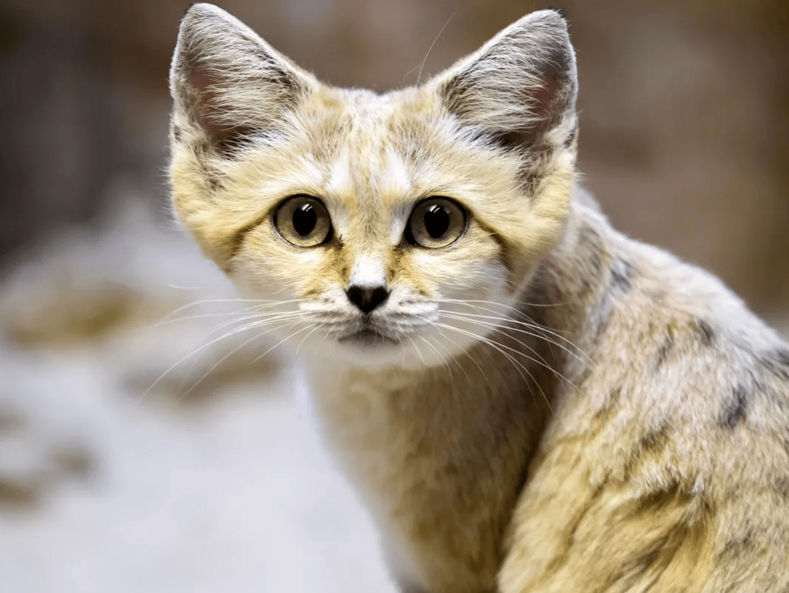
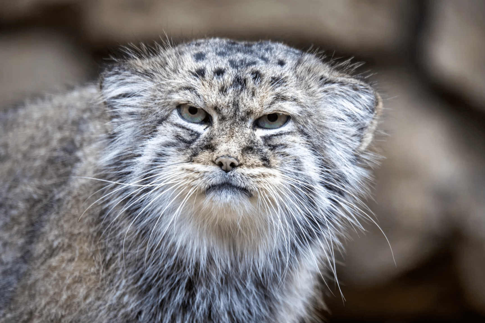
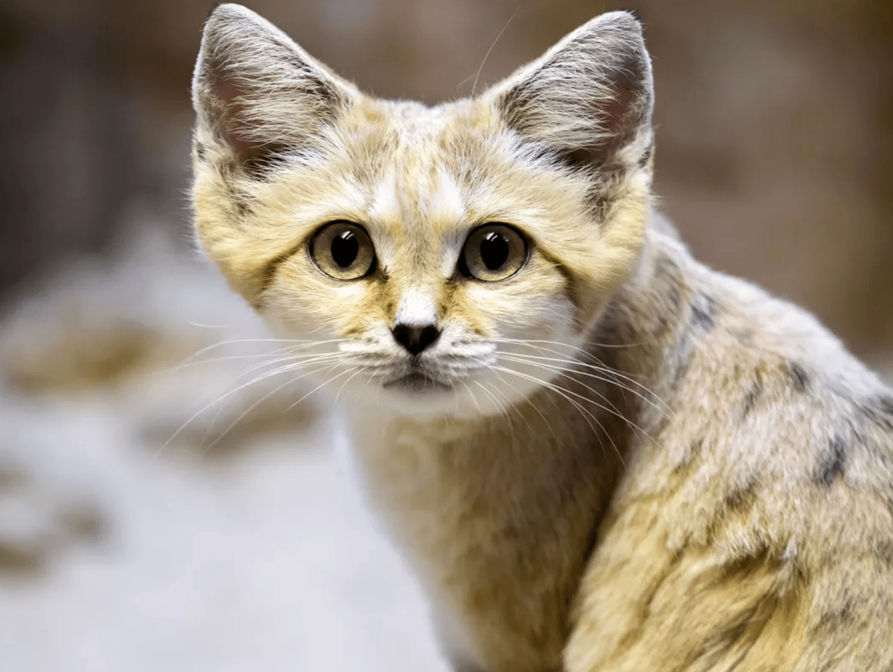
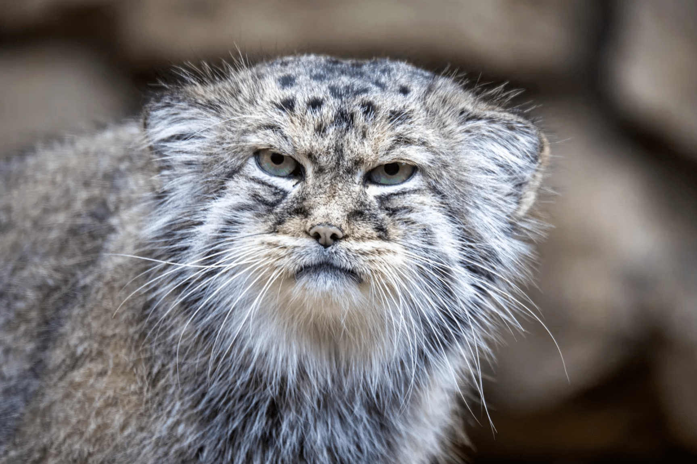

Qu'est-ce qu'un chat sauvage?
Les chats sauvages sont des carnivores peu connus du grand public. Pourtant, ils sont présents sur la plupart des continents : Asie, Amérique, Afrique, Europe.
Les chats sauvages sont des félins appartenant à la famille des félidés (ou Felidae en latin). Cette famille est actuellement divisée en trois sous-familles :
Les Machairodontinae
Cette sous-famille est éteinte depuis environ 10 000 ans. Elle représentait les grands félins aux canines particulièrement longues comme le tigre aux dents de sable
Les Pantherinae
Aussi appelée «grands félins», cette sous-famille concerne les animaux capables de rugir. On y trouve le lion, le jaguar ou la panthère.
Les Felinae
Cette sous-famille comprend tous les autres félins. C'est-à-dire ceux qui peuvent ronronner mais qui ne rugissent pas. Ils sont généralement qualifiés de "petits félins" et de "chats sauvages". Cette sous-famille est la plus proche physiquement de nos chats domestiques.